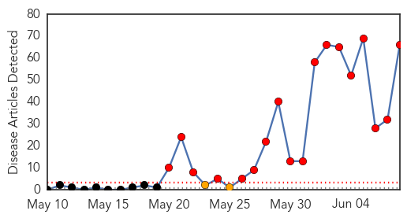
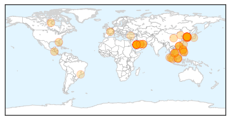
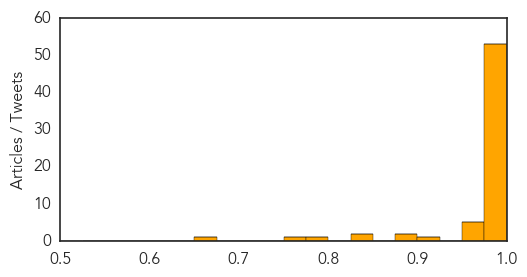

Ebola
30-Day Web Trend
0 alerts, 0 warnings

30-Day Twitter Trend
0 alerts, 0 warnings

Article Locations

Article Confidences

Top Articles:
- 1.000
- Fourth patient dies of MERS in South Korea
- 1.000
- Philippine News
- 0.995
- Ebola outbreak thrusts MSF into new roles
- 0.994
- Twitter users share four billion Ebola messages in a week
- 0.994
- Guinea Extends Ebola Emergency Measures Until the End of June
- 0.993
- MERS cases in South Korea rise to 87, with six deaths
- 0.993
- Preventing the next global pandemic
- 0.988
- The Salvation Army in Canada Ebola Crisis Team Continues Work in West Africa
- 0.976
- Volta NDC kicks against Ebola vaccine trial in Hohoe
- 0.973
- Can Statins Help Treat Ebola?
- 0.967
- NDC says no to "needless" Ebola vaccines trial in V/R
- 0.964
- MERS temporarily not threat to China: expert - Xinhua
- 0.960
- G7 warned world remains unprepared for pandemics
- 0.954
- Experts agree to develop robust blood transfusion services in Ebola affected and unaffected countries - Sierra Leone
- 0.942
- UNMEER Chief Thanks President Mahama For Extraordinary Leadership And Solidarity
- 0.927
- MERS cases in Columbia rise to 87, with six deaths
- 0.920
- Grand Bassa Midwife - Nurses Trainer
- 0.919
- Liberia/Guinea Hold 2nd Cross-Border Ebola Surveillance Meeting Coordinated by Global Communities
- 0.909
- ‘’THE THREAT OF ANOTHER OUTBREAK FROM A VACCINE PREVENTABLE DISEASE IS REAL’’ HEALTH MINISTER WARNS!
- 0.886
- Back From Ebola to Teach the Next Generation
- 0.866
- World Health Experts Ask G7 Countries to Create Infection Rapid Response Unit
- 0.859
- Sierra Leone News: ‘Sierra Leone in dire need of medical specialists’-Dr. Gooding « Awoko Newspaper
- 0.827
- donga.com[English donga]
- 0.808
- Liberia prepares for border surveillance
- 0.804
- Jenner media circus fueled by cash, not rights
- 0.803
- Beyond Ebola: Laying the foundation for Caribbean regional health security
- 0.793
- Amb. Zhao commends Journalists for ebola fight « Awoko Newspaper
- 0.790
- Three Nightmare Health Threats and How to Wake Up
- 0.782
- There Will Now Be An Actual Public Health Class On FX's 'The Strain'
- 0.780
- Zuriel Oduwole interviews her 15th world leader, President Alpha Conde of Guinea
- 0.759
- US to Invest US$57.2M in Health Sector
- 0.736
- Strengthening human resources for health systems resilience to care for mothers and children
- 0.696
- Pres. Sirleaf congratulates Sweden
- 0.660
- No reports of MERS in N.K. yet
- 0.629
- Beyond Ebola, laying foundations for Caribbean regional health security
- 0.622
- Sierra Leone journalists at daggers drawn over Ebola money
- 0.601
- The Doctor Who Contracted Ebola Is Feeling Fine -- NYMag
- 0.584
- Hallan cadáver por inundaciones en Texas y cifra de fallecidos aumenta a 23
- 0.542
- Sierra Leone News: SLAJ Kenema meet …Salone media contributes $1m to ebola fight-SLAJ Prexy « Awoko Newspaper
Top Tweets:
- 0.975
- G7 underwhelms with Ebola response - Politico http://t.co/hxDCBE2gZm ebola EVD
- 0.945
- Ebola en Guinée : "urgence sanitaire renforcée" étendue à de nouveaux départements - fin juin http://t.co/VUh0vyVGTo
- 0.921
- Minnesota man helps fight Ebola in West Africa - Post-Bulletin http://t.co/o1uWLZlagP ebola EVD
- 0.862
- Ebola Update: 27,189 confirmed, probable & suspected cases reported in 3 most affected countries, with 11,149 deaths. EbolaResponse
- 0.853
- .@WHO publishes Ebola diaries with accounts from Ebola first responders http://t.co/GBCGHJXRap
- 0.842
- In this outbreak, Ebola spread quicker than time available for addressing beliefs. Many communities changed only once affected.
- 0.841
- G7 states vow to wipe out Ebola but offer little concrete action - Reuters http://t.co/znhnnNJ0zP ebola EVD
- 0.821
- Health system strengthening needed to build resilient health systems that can respond and react to outbreaks such as Ebola G7Summit
- 0.815
- Here's the Difference Between MERS and Ebola - TIME http://t.co/um2JFY3EIs ebola EVD
- 0.794
- Sophie, Countess of Wessex meets Army nurse Anna Cross cured of Ebola - Daily Mail http://t.co/wpGF9aAIyq ebola EVD
- 0.778
- From today's Situation Report -> 12 new Ebola cases in SierraLeone last week https://t.co/HNZNNlWxk8 EbolaResponse
- 0.772
- L'épidémie d'Ebola « persiste » en Guinée et en SierraLeone http://t.co/GpRTYrtuDR via
- 0.751
- Ebola vaccines trial: Scientists confused over 'Starter' and 'Booster' drugs - Starr 103.5 FM http://t.co/2hoT5haU7j ebola EVD
- 0.715
- As Liberia's school systems recover after Ebola outbreak, @UNICEF distributes thousands of learning kits http://t.co/nNXWwOgf5P
- 0.685
- RT: . @PLOSNTDs models potential benefit of adding ring vaccination to case isolation during Ebola outbreak http://t.co/4WiVpCrw8c
- 0.638
- Guinée : scénarios ebola urgence politique http://t.co/NF0lk0p3Z0
- 0.616
- Guinea extends Ebola emergencymeasures https://t.co/OdUvwd9X9I via
- 0.595
- En Guinée, les rumeurs restent le plus grand défi pour éradiquer Ebola | Slate Afrique http://t.co/7tl2Ipl3n0
- 0.593
- Today, the New York Doctor Who Contracted Ebola Is Feeling Fine - New York Magazine http://t.co/GSUJTXylzC ebola EVD
- 0.585
- As of 31 May, 1,880 contacts associated with confirmed Ebola cases were under follow-up in Guinea. EbolaResponse is not over yet.
- 0.582
- ChildFund International leader Anne Goddard reflects on Ebola crisis - http://t.co/XtBrHGJnwV http://t.co/PTdMlbMTFo ebola EVD
- 0.567
- Global health leaders ask G7 for post-Ebola rapid response unit @reuters http://t.co/lniy4qPjMg
- 0.561
- ASU prof named world's 'most creative' for Ebola drug - http://t.co/P1VitXvgpY http://t.co/ZDQASLEqVc ebola EVD
- 0.558
- CDC DiseaseDetective Chris worked w/ hospitals to ensure staff had resources to treat Ebola – w/o becoming patients http://t.co/CklfHx4CCl
- 0.522
- Approche communautaire en santé : Expérience du Mali dans le suivi des sujets contacts d'Ebola http://t.co/QDmldZnct9
MERS
30-Day Web Trend
18 alerts, 2 warnings

30-Day Twitter Trend
13 alerts, 0 warnings

Article Locations
Article Confidences
Top Articles:
- 1.000
- Editorial: A new alert against MERS-Cov
- 1.000
- Does MERS Pose a Threat in the US?
- 1.000
- S Korea shuts nearly 2,000 schools as MERS cases soar
- 1.000
- South Korea reports sixth MERS death, surge in new infections as government tackles outbreak
- 1.000
- South Korea’s MERS outbreak and the importance of infection control – The Pump Handle
- 1.000
- South Korea Shuts 2,000 Schools As MERS Cases Increase
- 0.999
- S Korea shuts nearly 2,000 schools as MERS cases soar
- 0.999
- Self-care essential to combating MERS, news, Health News, AsiaOne YourHealth
- 0.999
- Sixth person dies of MERS virus in South Korea
- 0.999
- South Korea reports 6th death from MERS
- 0.999
- Korean MERS outbreak total spikes to 87
- 0.999
- MERS claims 6th victim
- 0.999
- 6th person dies of MERS virus in South Korea
- 0.999
- 6th person dies of MERS virus in South Korea
- 0.999
- S Korea shuts nearly 2,000 schools as #MERS cases soar
- 0.999
- Sixth person dies after contracting MERS in South Korea - National
- 0.999
- Just why has MERS spread so quickly in South Korea?
- 0.999
- South Korea Reports Jump in Mers Cases
- 0.998
- Vietnam puts together 4 fast response teams to confront MERS CoV
- 0.998
- Govt cautions Indonesians in S. Korea over MERS
- 0.998
- MERS tally climbs; 6th person dies-INSIDE Korea JoongAng Daily
- 0.998
- South Korea confirms 6th MERS death, 23 new cases
- 0.997
- State vigilant against MERS-CoV infection – Dr Zulkifli – BorneoPost Online
- 0.997
- First teen MERS patient confirmed
- 0.997
- Vietnam’s first suspected MERS-CoV case tests negative
- 0.997
- South Korea to track cell phones to prevent Mers spread
- 0.997
- South Korean MERS outbreak like early SARS - National
- 0.996
- Suspected Taiwan MERS cases ...｜Society｜WCT
- 0.996
- HK sets ‘serious’ response to S. Korea’s MERS outbreak
- 0.996
- Death Toll Rises To 6 As South Korea Announces Cell Phone Tracking To Monitor Quarantines
- 0.996
- Roundup: Vietnam launches action plan against MERS
- 0.996
- CHP investigates fever patients with travel history
- 0.995
- Hong Kong sets 'serious' response to South Korea's MERS outbreak
- 0.995
- DFA: No travel ban yet in S. Korea amid MERS-CoV outbreak
- 0.994
- Sixth Mers death in South Korea amid sharp rises in cases
- 0.992
- (LEAD) 2 Hong Kong patients with fevers test negative for MERS
- 0.991
- RI issues ‘travel advice’ over S. Korea MERS outbreak
- 0.991
- Korea to track phones to prevent MERS spread
- 0.990
- Hong Kong quarantines 2 more people over MERS fears
- 0.989
- MERS: 5 things to know
- 0.988
- KUNA : 23 new cases of MERS-CoV in South Korea
- 0.988
- Hong Kong quarantines 2 more people over MERS fears
- 0.987
- 800 PUIs checked for MERS, no new cases reported
- 0.987
- NAIA quarantine officials do tight screening for passengers from S. Korea
- 0.984
- Tempo - News in a Flash
- 0.984
- South Korean man in Philippines tests negative for MERS-CoV
- 0.984
- 'Screen South Korean tourists amid MERS threat'
- 0.984
- No travel ban to South Korea
- 0.981
- Prevention methods initiated in Taiwan over MERS fears, news, Health News, AsiaOne YourHealth
- 0.979
- Mers virus prompts call for travel curbs vs Korea
Showing top 50 articles...
Top Tweets:
- 0.728
- AFD Blog `Korea MERS Cluster Rises To 95 Cases, 7 Deaths' MERS-CoV http://t.co/nJILUB1YnQ
- 0.530
- AFD Blog `Hong Kong Raises MERS Response Level To Serious, Issues Travel Alert' MERS-CoV http://t.co/cmhThymokj
- 0.515
- AFD Blog `WHO MERS Update - Korea June 8th' MERS-CoV http://t.co/k12d2pGS74
- 0.501
- AFD Blog `Saudi MOH: 1 New MERS Case In Hofuf ' MERS-CoV http://t.co/nJILUB1YnQ